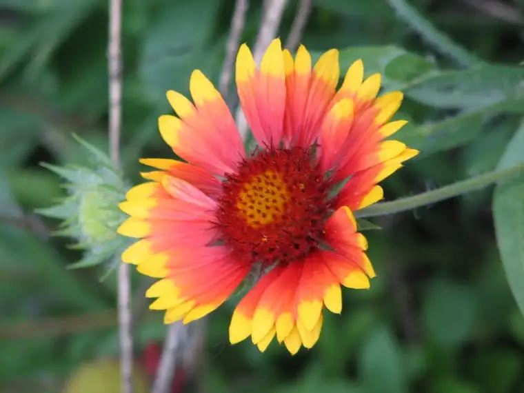

{kind=link}
Some people nurture their creativity more than others, perhaps, but it is within all of us and can emerge in many different ways. Maybe we enjoy cooking and being creative with that. Perhaps we get a kick out of rearranging our living quarters every so often. Our creative passion might be painting, scrapbooking, photographing our children and other things in our world, or writing songs. It might be the act of figuring out something new to have for dinner on a particular day. Maybe we enjoy singing in the shower or helping our children think of a new ways to respond to a negative situation at school. It also could include discovering new ways to reach out to our spouses. The possibilities are endless. Sometimes we just need to recognize them.
I’ve quoted before from this little devotional book, Days of Healing, Day of Joy, but now another great entry has jumped out at me and is begging to be shared (from January 4):
Most would not think of work as a prize. That is often due to the concept we have of work.
Work can be that of an artist, the work of creation. Such work is not the response to a whistle or the boring activity that follows a punched time card. Creative work is the fullest human expression of being alive. It comes from the inside out and has no boss other than an inner demand to create a thing of beauty that previously did not exist.
The primary task of human beings is to creatively work at making their lives a remarkable thing of beauty. Whether we be butcher, baker or candlestick maker, there is always the opportunity to make a truly creative effort of a life’s work by pounding out our dents and polishing that which is already beautiful. When we understand that life is the medium and we are the canvas, our efforts to improve become an exciting challenge rather than a boring task.
My hope for you today is that you find and name your creative passion and do at least one thing to act on that. If this helps any in identifying your creative leanings, think of creativity as any way in which you bring order to chaos. And as parents, let us find new ways to draw out creativity in our children, even as we guide them with the rules that are necessary to live well. Most of all, remember that creativity is open to all human beings, not just a select few.
On a slightly different (but somehow related, too) subject, please check out the new Forum online social networking Web site for parents and grandparents, which fully and officially launched today! Along with tips and connections, perhaps you will pick up some ideas for tapping into your creative energy here.